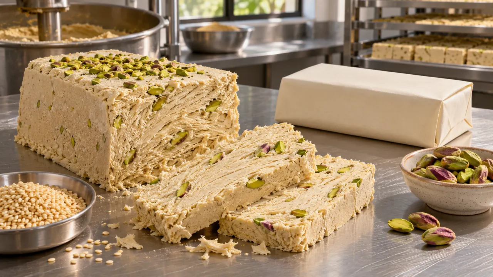

A Turkish confectioner offers an EU supermarket a pistachio halva for its own brand. The product sheet lists tahini, sugar and chopped pistachios. The buyer’s artwork says “sesame confectionery” on the front, but the back simply repeats “tahini” in ordinary type. The retailer’s website describes an “oriental sweet with nuts.” Each description gives a shopper a different answer. Before printing sleeves or accepting online orders, the buyer needs one verified recipe and a way to carry the required allergen information into every buying decision.
This example concerns prepacked food sold to consumers in the European Union. Regulation (EU) No 1169/2011 supplies the starting point. Articles 8, 9 and 21 identify responsibility, the relevant particulars and how to present substances listed in Annex II. Article 14 deals with distance selling. The Commission’s allergen notice explains the treatment of compound ingredients and the presentation of allergen names. Apply the rules to the actual formula and intended country of sale. A photograph of another brand’s helva is useful for neither task.
Find the operator who will sign off the label
Under Article 8, responsibility for food information sits with the operator under whose name or business name the food is marketed. If that operator is outside the EU, responsibility rests with the importer into the Union market. A German supermarket marketing the confection under its own business name should identify its responsible team before asking a Turkish factory to prepare artwork. Where a Turkish brand markets under its own name and is established outside the Union, establish which EU importer fills that role. For a private-label oil order, see how to substantiate Turkish olive oil origin and harvest claims before printing.
Distinguish ownership of a trademark from the business name and address that the product bears. A designer may receive instructions from an agency, while a separate wholesaler purchases the stock. Ask the parties to identify the accountable legal entity in the approval email. The printer can verify that a file is technically printable. The foreign supplier can confirm its recipe. Someone with both the specification and the destination requirements must decide whether the final consumer information is accurate.
Translate the ingredient, then trace its source
Ask the plant for the current manufacturing specification, including every constituent of purchased pastes, chocolate coatings and decorative inclusions. Record the revision number and effective production lot. Compare the technical document with a batch sheet used on the line. A commercial catalogue might describe a cocoa swirl as chocolate even when the supplier uses a different preparation. That difference matters if one version introduces milk powder or soya lecithin.
Tahini is sesame paste. Annex II identifies sesame seeds and their products, and lists specific nuts including pistachios. For this example an English ingredient presentation might describe the paste as “tahini (sesame)” and name pistachios separately, with the allergen names visibly emphasised. Those words illustrate the allergen treatment only. A finished ingredient list also needs correct ordering, appropriate ingredient designations and any other required particulars. Assemble it from the signed formula in the destination language.
Do not collapse pistachios, hazelnuts and almonds into an undifferentiated “nuts” entry. If all three are deliberate ingredients, trace each one and use its specific name. Conversely, a picture of hazelnuts on a supplier brochure does not prove that hazelnut is present in this product. Ask for a written answer tied to the ordered variant. Keep the reply with a sample or a clear photograph of the exact wrapper to which it relates.
Read inside compound ingredients and processing aids
Consider a second flavour with a milk chocolate layer. Its purchased coating contains cocoa ingredients, sugar, milk powder and an emulsifier derived from soya. Inspect the supplier’s constituent breakdown, then assess every Annex II source against the applicable entries and exemptions. A supplier’s statement that the coating represents only a small proportion of the finished bar does not remove the obligation to disclose an applicable allergen. Article 21 preserves that obligation even where other ingredient-listing simplifications might apply.
Follow processing aids as well. Article 9 covers a listed ingredient or processing aid, including a derivative, used in production and still present in the finished food, even in altered form. Ask the technical lead about carriers in flavour preparations, dusting agents and rework returned to the mixer. If a source is unclear, obtain its identity and the basis for any claimed exemption. A purchasing shorthand such as “carrier permitted” gives the artwork reviewer insufficient information.
Three specifications may describe the same input at different levels. A delivery note names a distributor’s stock code, a technical sheet gives the commercial blend, and a manufacturer’s annex contains the ingredients. Connect them with a revision date and supplier reference. When the annex is confidential, arrange a restricted review by the responsible quality team. Keep a documented conclusion that the brand owner can retrieve if a retailer queries an ingredient after launch.
Make the distinction visible on a real sleeve
Article 21 calls for the relevant name to stand out from surrounding ingredients through typography, style or background. Bold type is a straightforward choice. In the working sample, emphasise “sesame” and “pistachios” wherever the applicable ingredient descriptions require it. A bold front-panel product name cannot repair a back panel that leaves the allergen indistinguishable. The Commission’s guidance also addresses foods whose name clearly identifies an allergen when they carry an ingredient list.
Make a physical proof at normal size. Wrap it around a filled carton, fold the flap, and inspect the ingredient panel under shop lighting. If the bold face looks identical to regular type on textured kraft paper, change the typeface or improve the contrast. Check that a seam, barcode sticker or promotional sash cannot cover the relevant words. Compare the proof with the printer’s rasterised file because a substituted font can silently remove the heavier weight.
A bilingual sleeve needs two complete readings. Put the French and Dutch panels, for example, before reviewers competent in each language and familiar with local requirements. Article 15 requires mandatory information in a language consumers in the target state can easily understand, and Member States may specify official languages. Confirm which markets the pack can serve. Selling in another country may call for a different version even though the recipe and barcode remain identical.
Give an online shopper the same answer before checkout
For distance sales of prepacked food, Article 14 requires the mandatory food information, apart from the date of minimum durability or the use-by date, to be available before the purchase is concluded. It may appear on the sales material or through another clearly identified means that imposes no supplementary cost on the consumer. All mandatory particulars must be available at delivery. A readable wrapper inside the delivered parcel cannot repair information missing when the shopper placed the order.
Test the mobile product page as someone buying one box. Select the pistachio flavour, open the ingredients and verify that sesame and pistachios are distinguishable. Change to the chocolate variant and watch for milk or soya information specific to that recipe. If both variants inherit a single generic description, stop the listing until the store can associate each selection with the correct data. In a mixed gift assortment, establish what a customer can actually receive before approving the assortment description.
Ask a marketplace how it imports formatted text. An interface might strip bold tags or convert a column into plain text during a nightly catalogue update. Publish a preview, inspect the customer-facing result and retain a dated screenshot. Repeat on a small screen and after a language change. A pack photograph can help a shopper recognise the product, but a blurred thumbnail that only shows the front supplies no reliable ingredient information.
Keep unintended contact separate from recipe ingredients
A factory may also handle walnuts on a neighbouring line. That raises a different question from the intentional use of pistachios. Obtain a product-specific assessment covering storage, utensils, changeovers, cleaning and possible shared rework. Article 36 governs voluntary food information, including standards against misleading or confusing the consumer and the use of relevant scientific data where appropriate. The team deciding whether precautionary wording is justified needs evidence about this particular operation.
A precautionary statement cannot stand in for the mandatory declaration of an ingredient deliberately added to the mixture. A confectioner who adds sesame paste knows it is present. Passing that fact to the customer as a mere possibility misdescribes the recipe. Equally, printing a blanket warning for every substance handled anywhere on a large site gives little insight into the actual process. Document who reviewed the risk, the information considered and the decision for the individual product.
Two lots arrive with different artwork
Suppose a pallet contains forty cartons of the approved plain recipe and twenty of a pistachio edition carrying an obsolete sleeve. A warehouse photograph shows the pistachio declaration on the master case, while the individual retail packs omit it. Identify both lot codes, count the affected consumer units and isolate the suspect cartons. Block online fulfilment from that location until the physical stock and digital records agree. Inspect samples from several parts of the pallet before concluding the discrepancy stops at one case.
If the goods have already moved, trace the affected lots to their recipients and engage the responsible operator’s food safety team immediately. Regulation (EC) No 178/2002, particularly Articles 18 and 19, addresses traceability and the operator’s duties concerning withdrawal, authority notification and, where necessary, consumer recall. If the operator has reason to believe that food outside its immediate control fails food safety requirements, it must start withdrawal immediately and inform the competent authorities. If consumers may already have received it, they need accurate information about the reason. Recall is required where other measures cannot adequately protect them. Document the recipients reached, quantities recovered and information supplied to the competent authority where required.
For units still under control, assess whether a compliant corrective label is feasible. Check adhesion on the actual wrapping, legibility after storage, and coverage of conflicting wording. Require an authorised reviewer to release corrected stock. Reconcile unused stickers, rejected packs and finished units to the starting count. Retain a corrected specimen alongside the original complaint. The warehouse instruction should identify the precise lots released so an unrelated pallet remains blocked until its own investigation concludes.
Write a change instruction that follows the product
The Turkish supplier agreement should specify which changes require notice before production. Include substitutions of paste, coatings, flavour carriers or nut suppliers, changes in shared equipment, and movement to a different packing site. Agree the evidence needed for fresh approval and who pays for obsolete packaging when a change originates at the plant. A request from the commercial team for a “richer pistachio taste” can affect percentages, descriptions, imagery and the ingredient statement simultaneously.
Name a person responsible for taking old information out of circulation. That person should contact the printer, warehouse, distributor, marketplace operator and photography agency as appropriate. Confirm the first lot using the new formula and the last shipment bearing the former sleeve. If a retailer holds both recipes at once, examine how its picking system connects each order to the information shown at purchase. A single online record serving materially different packs can recreate the original problem even when both packs are individually accurate.
Before the first sale, hand the product record to a colleague who did not attend the approval meeting. Ask them to identify the sesame source, the named nuts, the accountable EU operator and the consumer information displayed for one selected variant. Then give them a lot number and ask which printed and digital versions applied. Any answer requiring a telephone call to the designer or an undated spreadsheet marks a gap the importer can close while the cartons are still in the factory.
Frequently asked questions
Is “tahini” enough to identify sesame in the ingredients?
Identify sesame clearly and emphasise the allergen name in the ingredient list. Have a destination-market reviewer check the final wording and presentation.
When does an online buyer need access to the allergen information?
Make it available before purchase at no supplementary cost and ensure that the mandatory information is also available at delivery.